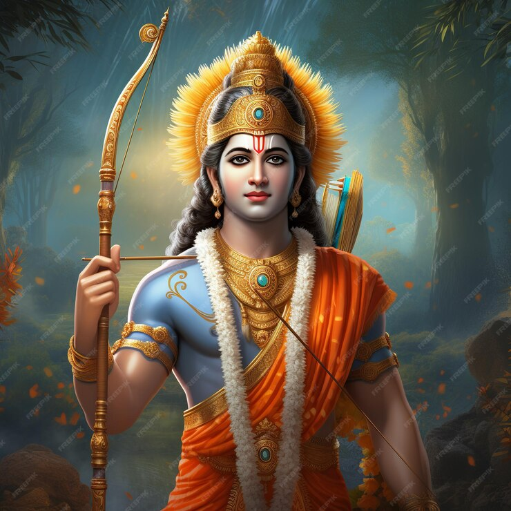

On the website, users can choose between a winter tour and a summer tour to explore the village’s apartments and ski areas through a 360-degree panoramic virtual tour. What makes this website one of the best-designed websites in the world is the 360-degree views it offers, which allow users to feel like they’re part of the experience. Consider investing to create something similar if you’re in the travel and hospitality industry. Offering a virtual tour that allows users to experience a destination before booking can cause reservations to increase between 16% and 67%.

Rama (/ˈrɑːmə/;[4] Sanskrit: राम, romanized: Rāma; Sanskrit: [ˈraːmɐ] ⓘ) is a major deity in Hinduism. He is the seventh and one of the most popular avatars of Vishnu. In Rama-centric traditions of Hinduism, he is considered the Supreme Being.[5] Rama was born to Kaushalya and Dasharatha in Ayodhya, the capital of the Kingdom of Kosala. His siblings included Lakshmana, Bharata, and Shatrughna. He married Sita. Though born in a royal family, Rama's life is described in the Hindu texts as one challenged by unexpected changes, such as an exile into impoverished and difficult circumstances, and challenges of ethical questions and moral dilemmas.[6] Of all his travails, the most notable is the kidnapping of Sita by demon-king Ravana, followed by the determined and epic efforts of Rama and Lakshmana to gain her freedom and destroy the evil Ravana against great odds. The entire life story of Rama, Sita and their companions allegorically discusses duties, rights and social responsibilities of an individual. It illustrates dharma and dharmic living through model characters.[6][7] Rama is especially important to Vaishnavism. He is the central figure of the ancient Hindu epic Ramayana, a text historically popular in the South Asian and Southeast Asian cultures.[8][9][10] His ancient legends have attracted bhasya (commentaries) and extensive secondary literature and inspired performance arts. Two such texts, for example, are the Adhyatma Ramayana – a spiritual and theological treatise considered foundational by Ramanandi monasteries,[11] and the Ramcharitmanas – a popular treatise that inspires thousands of Ramlila festival performances during autumn every year in India.[12][13][14] Rama legends are also found in the texts of Jainism and Buddhism, though he is sometimes called Pauma or Padma in these texts,[15] and their details vary significantly from the Hindu versions.[16] Jain Texts also mentioned Rama as the eighth balabhadra among the 63 salakapurusas.[17][18][19] In Sikhism, Rama is mentioned as one of twenty-four divine avatars of Vishnu in the Chaubis Avtar in Dasam Granth.[20] Etymology and nomenclature Rama is also known as Ram, Raman, Ramar,[α] and Ramachandra (/ˌrɑːməˈtʃændrə/;[22] IAST: Rāmacandra, Sanskrit: रामचन्द्र). Rāma is a Vedic Sanskrit word with two contextual meanings. In one context, as found in Atharva Veda, as stated by Monier Monier-Williams, it means "dark, dark-colored, black" and is related to the term ratri, which means night. In another context in other Vedic texts, the word means "pleasing, delightful, charming, beautiful, lovely".[23][24] The word is sometimes used as a suffix in different Indian languages and religions, such as Pali in Buddhist texts, where -rama adds the sense of "pleasing to the mind, lovely" to the composite word.[25]
